Mise en bouche
Gambas sauvages craquantes, piperade bascaise
Loup de ligne et ses petits légumes de saison
Entremet de fruits rouges
Mise en bouche
Duo de boudins, crème de rave au chorizo de patta negra
Joue de boeuf confite et légumes oubliés
Sélection de fromages
Baba au rhum, chantilly à la vanille de Madagascar
 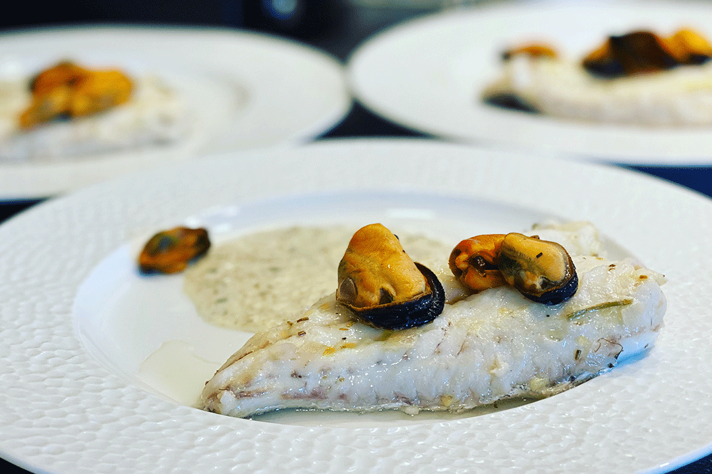
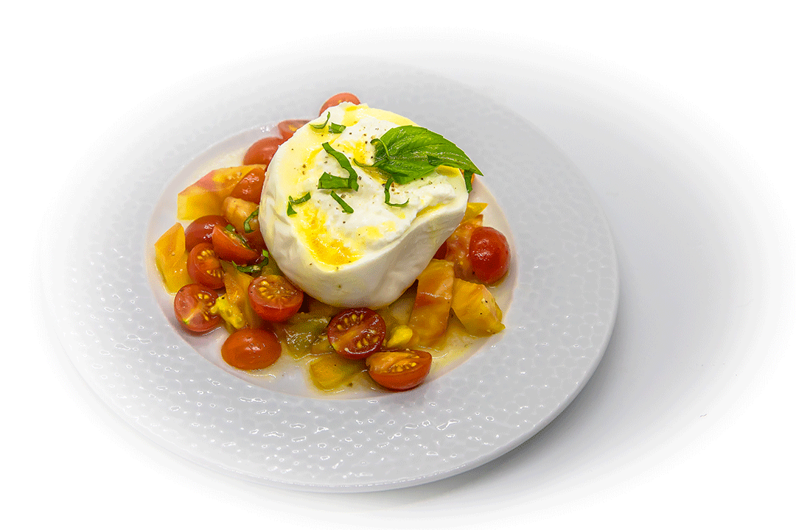
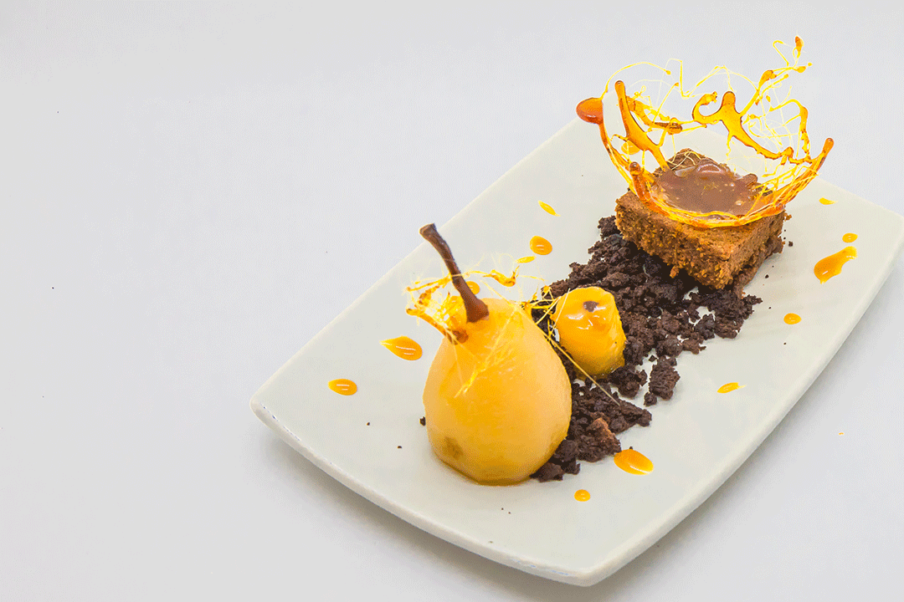
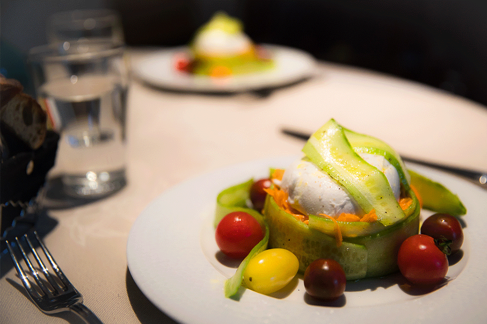
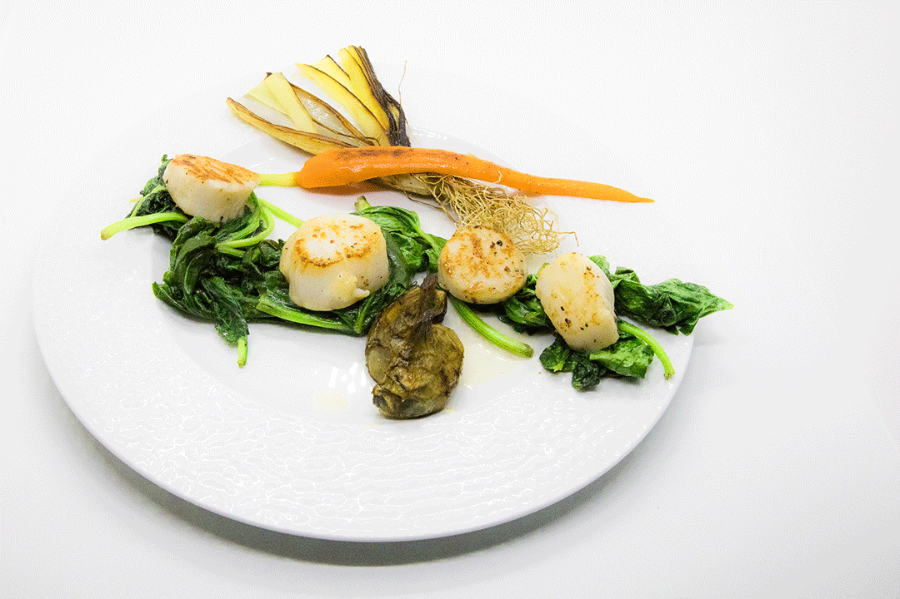
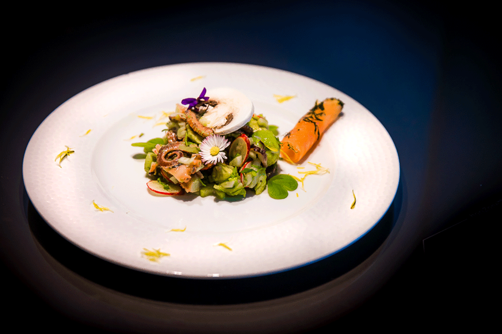
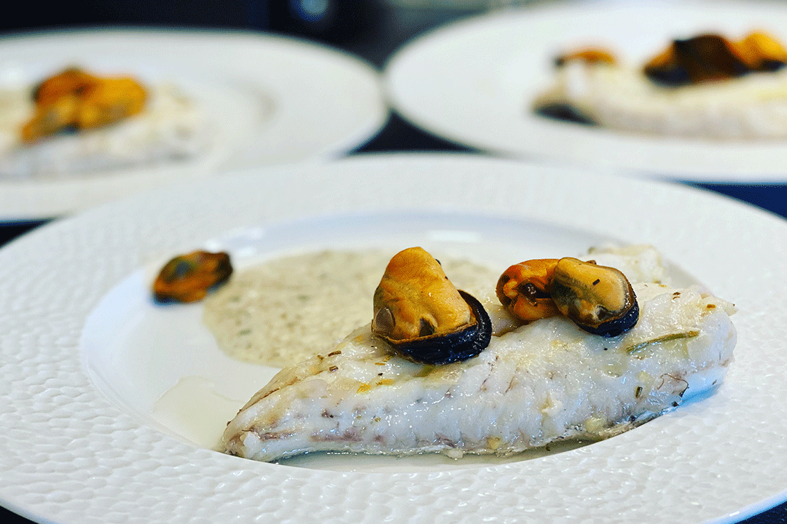
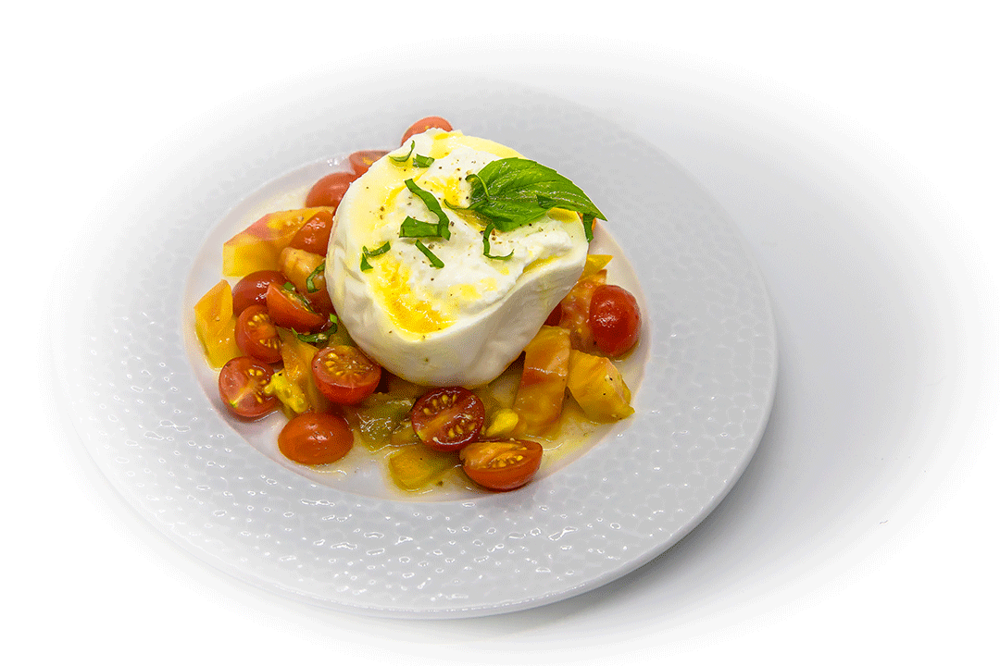
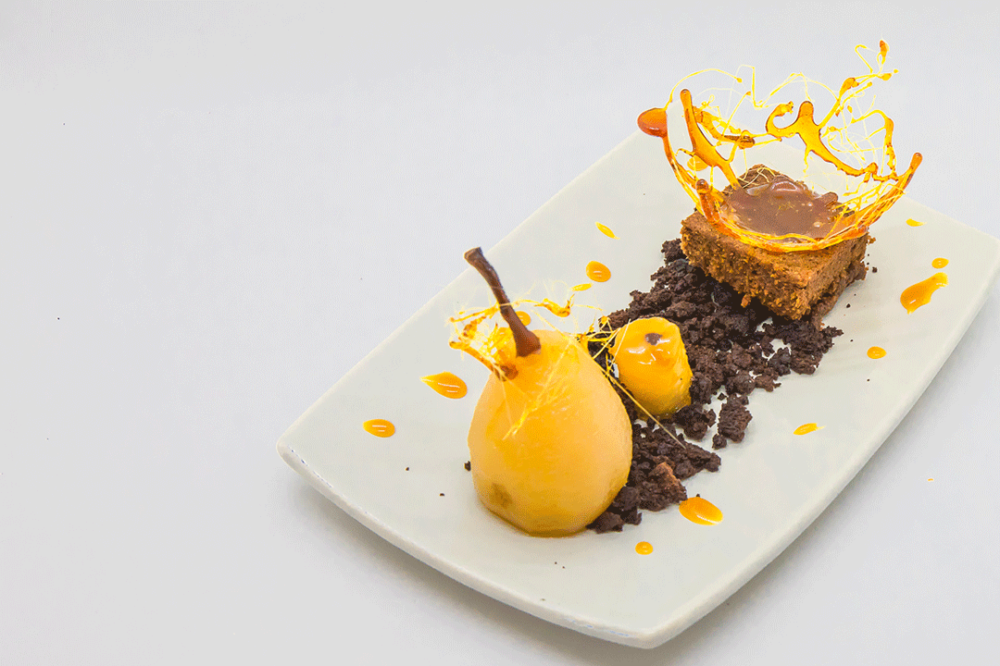
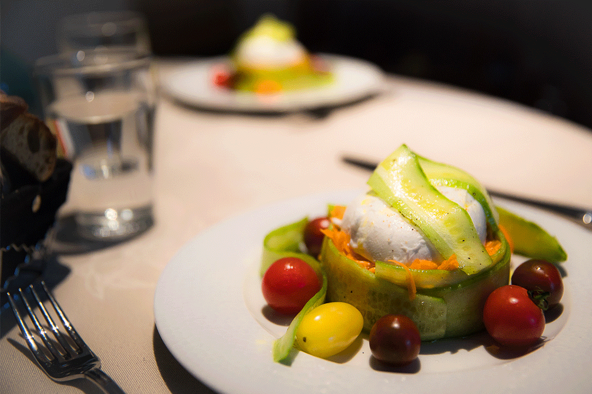
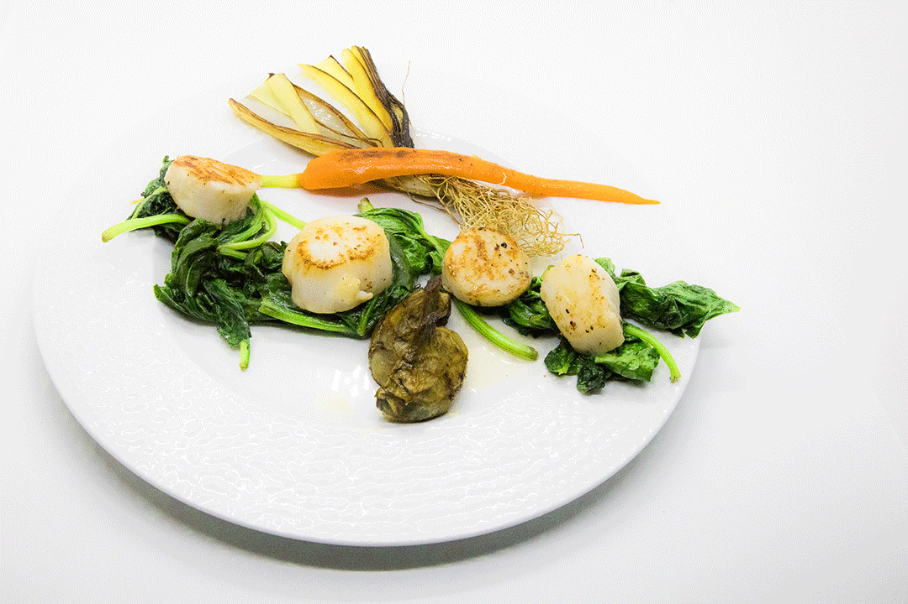
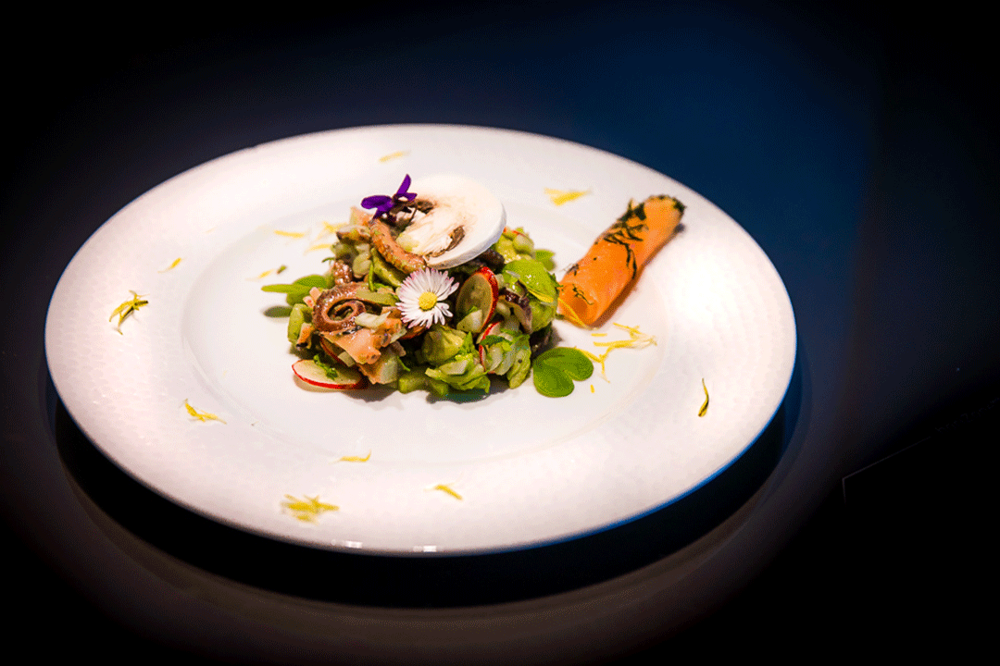